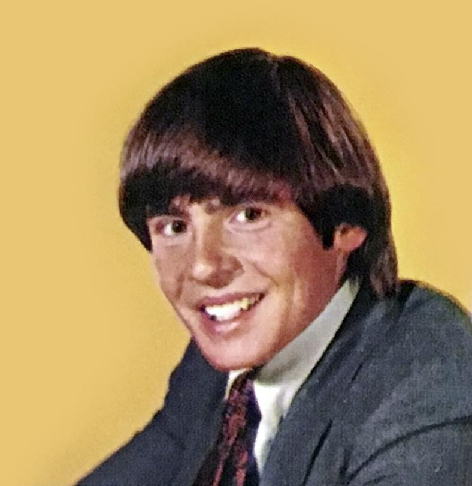

"Gets in trouble at the drop of a drumstick"
Micky Dolenz
George Michael Dolenz Jr, (born March 8, 1945), originally had his own rock group called "Micky and the One-Nighters" in the early- to mid-1960s with himself as lead singer. In 1965, Dolenz was cast in the television sitcom The Monkees and became the drummer and a lead vocalist in the band created for the show (although not a drummer initially), he was lead singer in songs such as "I'm a Believer" and "Last Train To Clarksville".

"Thinks inhibitions are something under the hood of hot rods"
Michael Nesmith
Robert Michael Nesmith, (born 30 December 1942), was born in Houston, Texas, being an only child. Nesmith enlisted in the United States Air Force in 1960 in which he obtained a G.E.D. and was discharged under honorable conditions in 1962. Nesmith landed the role as the wool-hat-wearing guitar player 'Mike' in the show 'The Monkees' from 1965 to early 1970. He wrote several of the songs performed by The Monkees such as 'Mary Mary', 'Listen to the band' and 'The girl I knew somewhere'.

"The poker-pussed picker of proposterous predicaments"
Peter Tork
Peter Halsten Thorkelson, (born 13 February 1942), began studying piano at the age of nine, showing an aptitude for music by learning to play several different instruments, including the banjo and both acoustic bass and guitars. Though the group was not allowed to play their own instruments on their first two albums, he was an exception, playing what he described as 'third chair guitar' on Mike Nesmith's song, 'Papa Gene's Blues', from their first album.
With his cancer returning in 2018, he died on February 21, 2019, eight days after his 77th birthday.

"Falls in love the way other people breathe"
Davey Jones
David Thomas Jones, (born 30 December 1945), was born at 20 Leamington Street, Openshaw, Manchester. Initially interested in becoming a jockey, David dropped out of secondary school to train in this field but it was short-lived. From 1966 to 1971, Jones was a member of the Monkees, also part of a television show of the same name; of which he was the lead singer to popular songs such as "Daydream Believer".
He passed away 29 February 2012 due to heart complications.